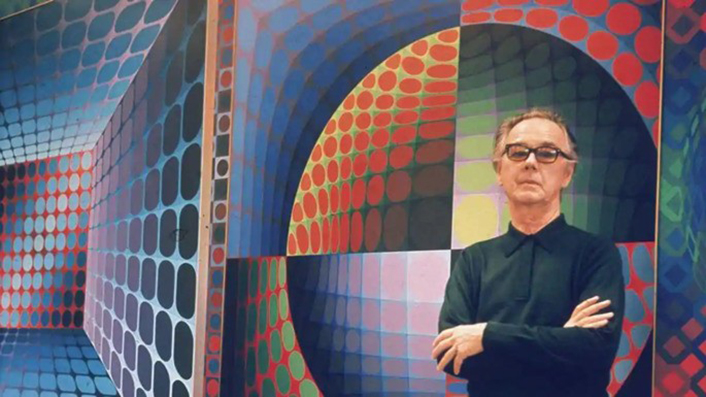
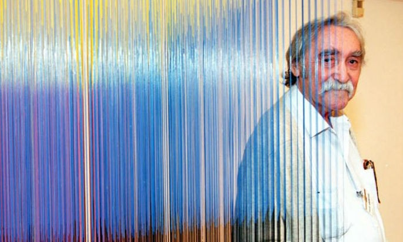
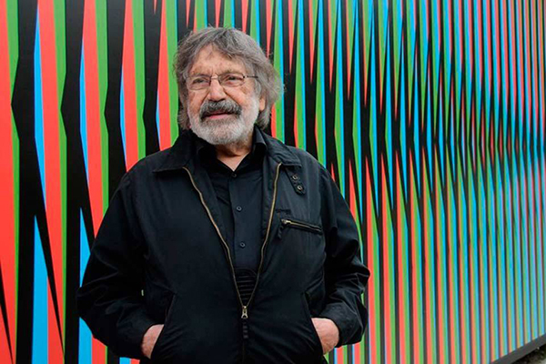
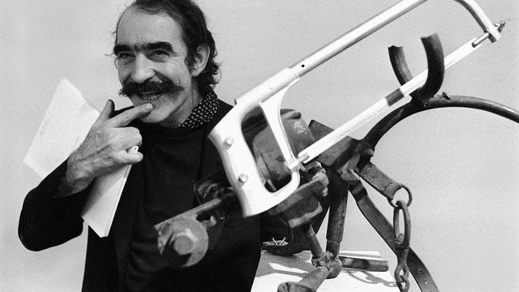

Víctor Vasarely
Hungría, 1906-1997. Fue uno de los más destacados artistas del arte óptico y del cinetismo. Implementó la contraposición de dos sistemas de perspectiva y de zonas de color con igual valor tonal. Uno de los recursos más utilizados fue la ambiguedad óptica. Tuvo una obra pública destacada desde sus primeras intervenciones en la Ciudad Universitaria de Caracas.

Jesús Rafael Soto
Venezuela, 1923-2005. Inspirado en el sistema musical dodecafónico y la música serial, usó la repetición y las progresiones para lograr un efecto de continuidad y evolución de la repetición serial. Concebía el espacio como parte de la materia de su obra y entendía que el ser humano no estaba frente al espacio sino que era parte de este. Destacó por la creación de los penetrables.

Carlos Cruz-Diez
Venezuela, 1923-2019. Hizo de la vibración colorista el centro de su propuesta. Conocido por usar listones estrechos de color, dispuestos en ángulo recto con respecto a la superficie de la obra. Así, el color refracta sobre la superficie y, en la medida en que se desplaza el espectador, la obra modifica creando la sensación de movimiento.

Jean Tinguely
Suiza, 1925-1991. Fue un pintor y escultor ampliamente conocido por sus llamadas "esculturas máquina", lo que hizo de él uno de los más importantes exponentes del cinetismo. Su enfoque fue más próximo a los postulados antiartísticos del dadaísmo, motivo por el cual su obra es una sátira a la sobreproducción industrial. Su primera obra propiamente cinética fue Heureka, la cual se caracteriza por la producción de movimiento "inútil", es decir, desprovisto de sentido.